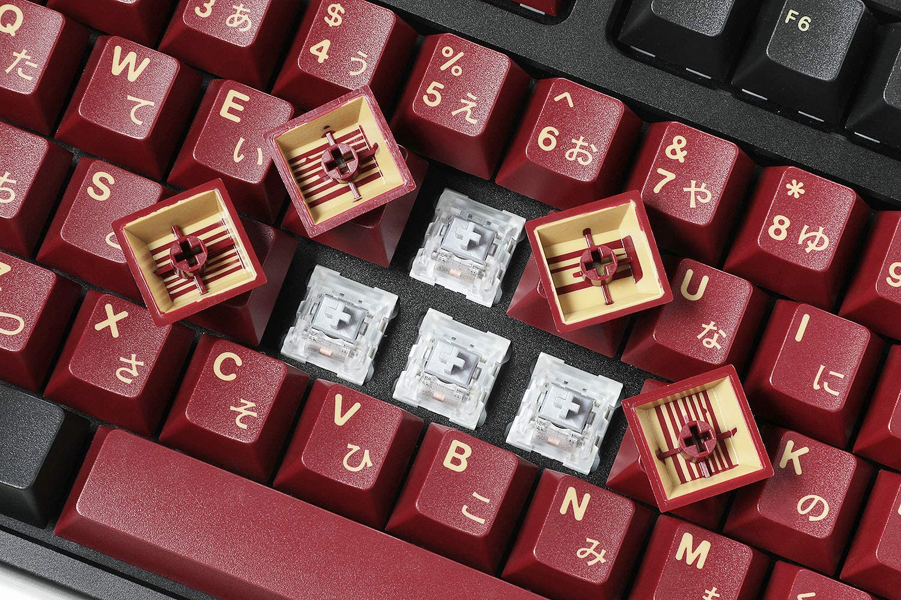
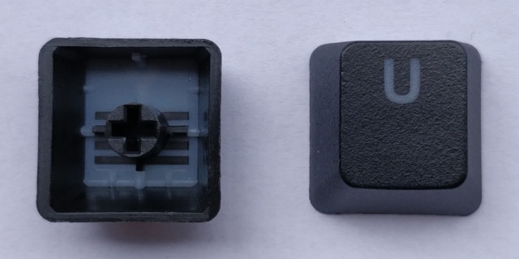
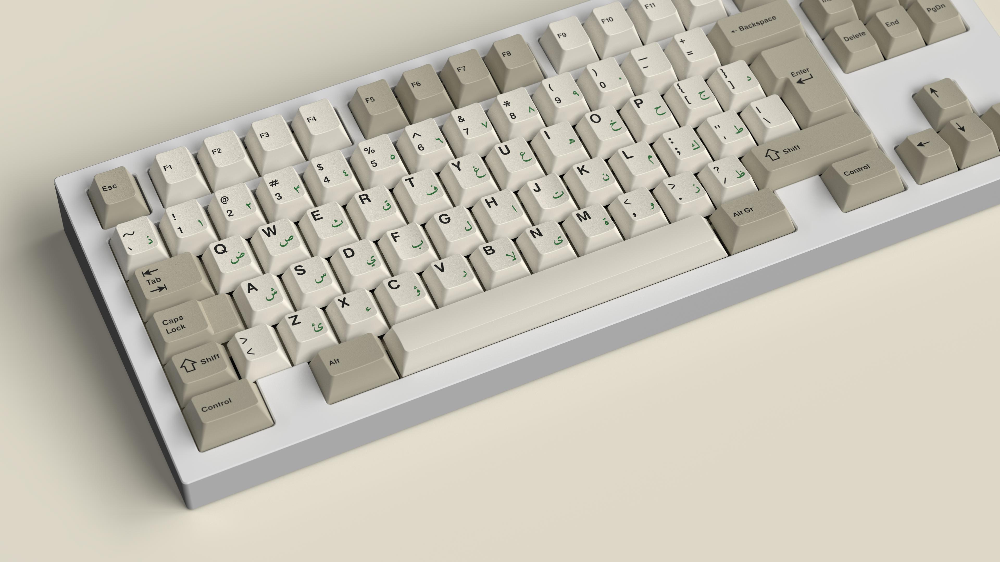
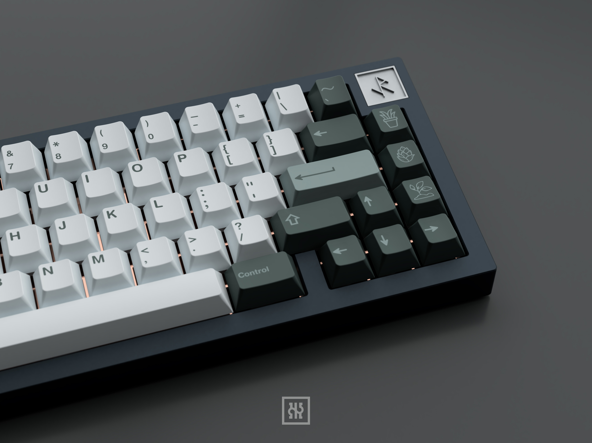
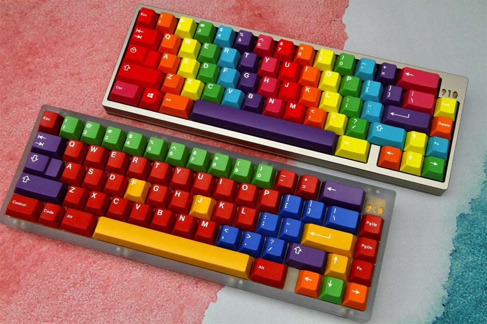
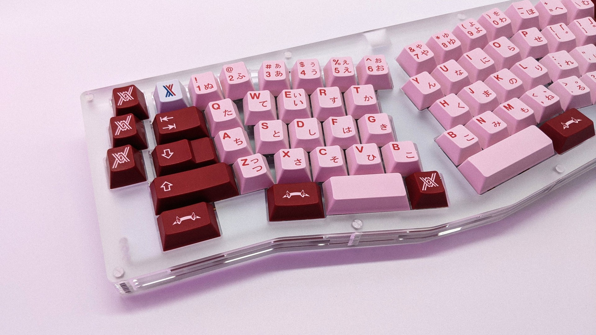
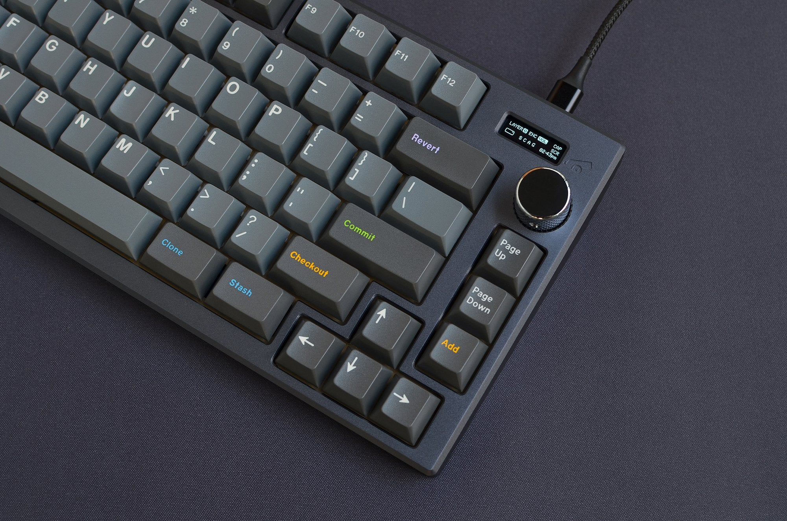
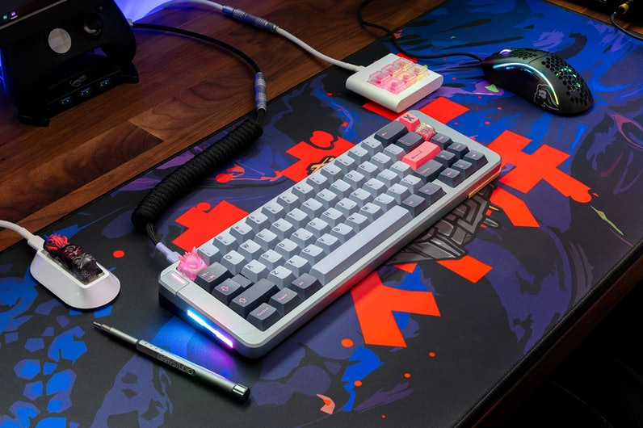
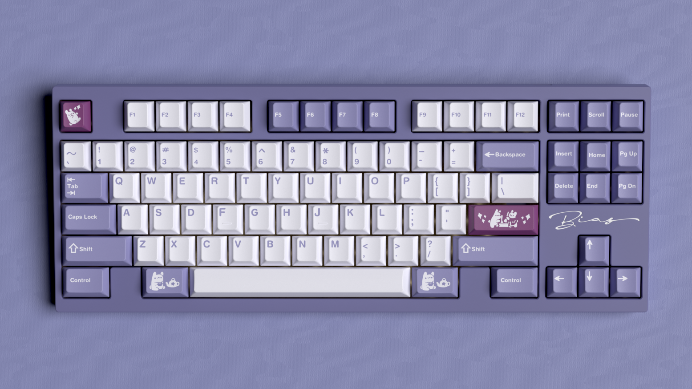

Ok, the hard part is now finished. Let's finish up by putting the pcb/plate/switch sandiwch into the case and screw it in. The final thing we are missing are keycaps, and this is where the hobby gets very expensive. There are many types but I will focus on the main two being gmk and pbt. Although GMK keycaps are typically around $120 and not readily available, they offers higher quality keycaps with a thick double shot mold. For a beginner build, I recommend picking up a cheap pbt set off amazon. Here is a comparison between the two.
 Perhaps this next step will be the hard part which is deciding on what keycaps you want to purchase as there is a variety of different sets, especially with gmk's precise color matching. Do note that if you choose to purchase GMK keycaps that have already been sold out, your only option is to wait for a potential rerun of the groupbuy or have to buy it for nearly double retail price online. And finally, you simply place your keycaps onto your switches and begin typing.
Custom keyboards are extremely unique and the different combinations are abundant. I hope you can create something special!
      